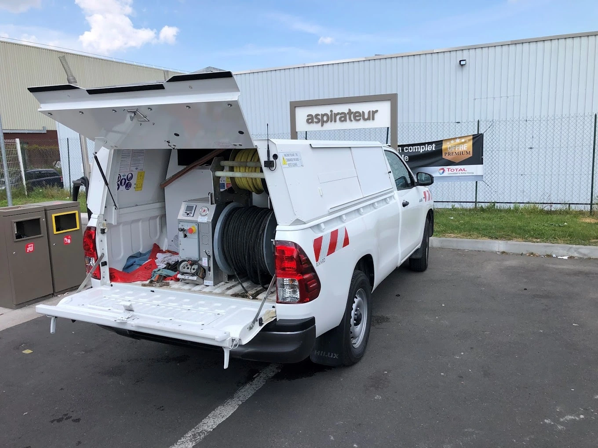
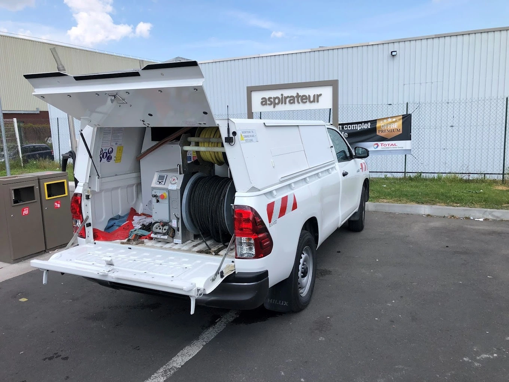
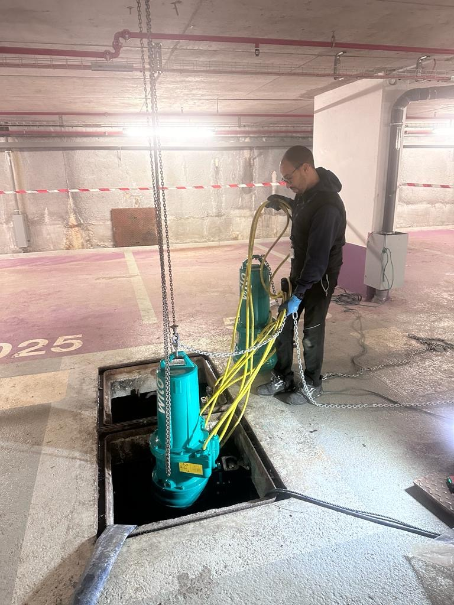
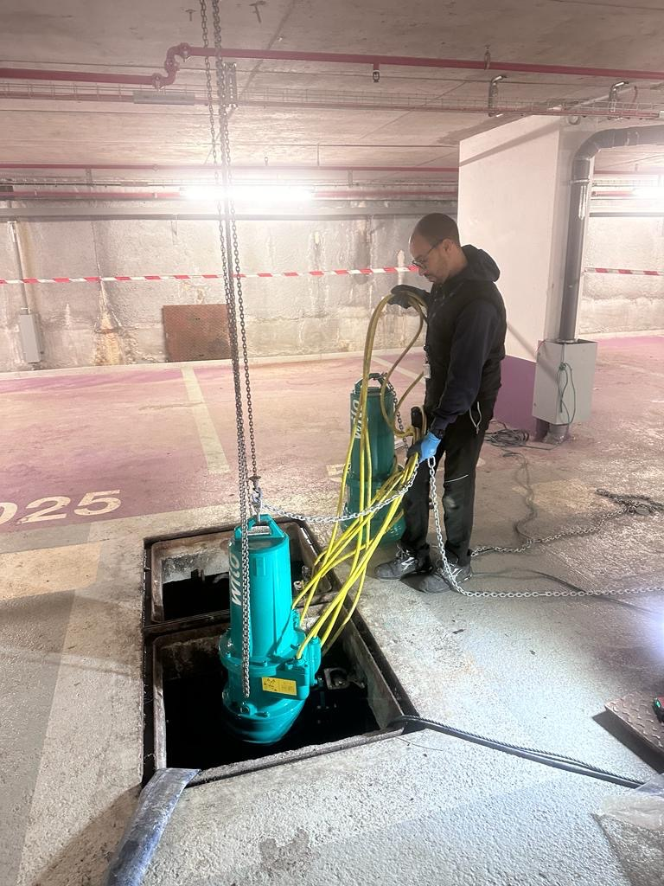

Que ce soit pour un dégorgement, un entretien ou encore une vidange de vos canalisations, toute l’équipe d’Aqua'serv assainissement 94 se tient à votre disposition pour intervenir dans tout l’Île-de-France. Intervention d’urgence ou contrat d’entretien annuel ; choisissez la formule la plus adaptée à vos besoins et confiez la longévité de votre installation et de votre matériel à nos équipes de professionnels. Grâce à des outils et des matériaux adaptés, Aqua'serv assainissement 94 vous garantit un service de qualité.
 



Notre équipe qualifiée met son expertise au service de votre projet, garantissant une approche professionnelle et des résultats exceptionnels. Chacun de nos professionnels diplômés est déterminé à surpasser vos attentes, assurant ainsi la réussite de chaque étape. Faire appel à notre savoir-faire, c'est opter pour la qualité dans chaque aspect de nos services.
 



Lundi : 06h - 00h30
Mardi : 06h - 00h30
Mercredi : 06h - 00h30
Jeudi : 06h - 00h30
Vendredi : 06h - 00h30
Samedi : 06h - 00h30
Dimanche : 06h - 00h30
Adresse : 9 Rue Condorcet, 91350 Grigny
Tel : 06 58 44 42 71
E-mail : contact.aquaserv@gmail.com
Site : Aquaserv Paris (75)
Site : Aquaserv Seine-et-Marne (77)